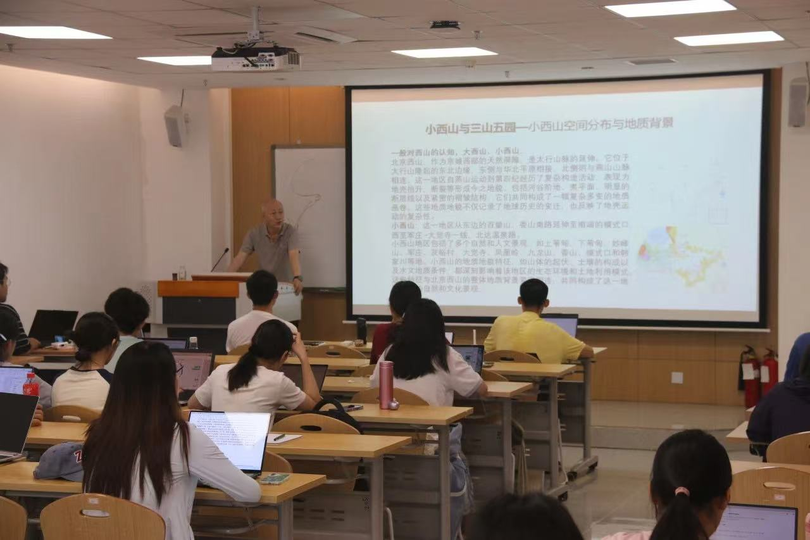
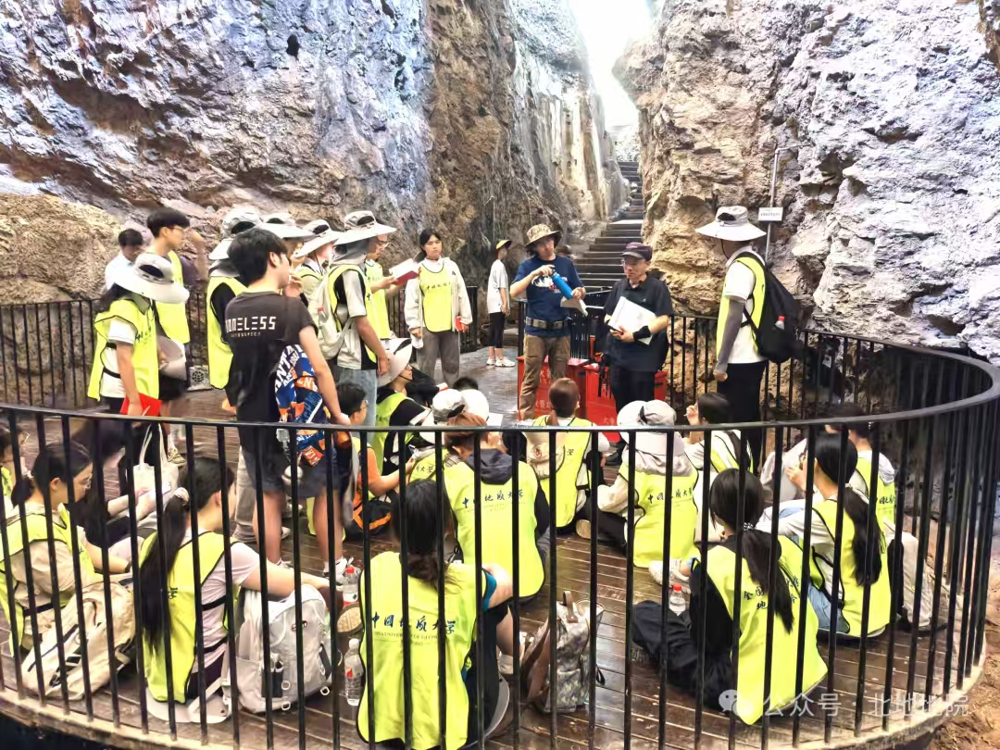

中国地质大学（北京）地球科学研学营
2023年《基础教育课程教学改革深化行动方案》提出"科学素养提升行动"，强调通过科学类学科教学、科普活动等路径，培养学生的科学观念、探究实践能力与态度责任。
在全球资源格局剧变、能源转型加速的背景下，战略级矿产（锂、稀土、钴等）的发现与管控已不仅是工业问题，更关乎国家安全与全球话语权。
名校青年学者计划以自然科学为核心，带领初高中生深度探访"地质界黄埔军校"——中国地质大学（北京），通过高校沉浸式体验，帮助学生前置探索专业方向，激发对自然科学的深厚兴趣。

教育部直属全国重点大学，以地球科学为主要特色，涵盖理、工、文、管等多学科协调发展，创建于1952年。
拥有国家重点实验室、国家级实验教学示范中心等高水平科研平台，岩石光薄片实验室、构造模拟实验室等对研学营开放。
北京校区坐落于海淀区学院路，学术氛围浓厚，依托首都丰富科研和教育资源，毗邻清华、北大等名校群。
学科独特性：地质学研究地球物质组成、内部构造及演化规律，是自然科学的基础学科，承载着培养科学思维、系统思维的重要使命。
趣味性与实践性：化石挖掘、矿物鉴定、地质构造模拟等实践环节，让抽象理论转化为具象体验；VR地震模拟实验以游戏化方式呈现地球内部运动规律。
打破专业误解：很多学生认为"地质学=挖矿"，本次研学通过实验室操作、科研人员访谈，帮助学生理解地质学实际涵盖环境监测、新能源开发、文化遗产保护、地质灾害防治等前沿领域。

无论初中还是高中，学生都正处于学术兴趣萌芽与升学规划意识觉醒期。通过"地质勘探实践 + 名校学子对话"，帮助他们打破"唯分数论"，建立"兴趣驱动"的学习观，提前接触顶尖高校学术生态，明确未来努力方向。